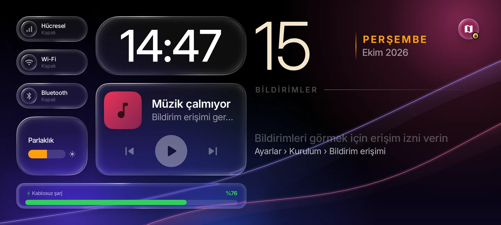
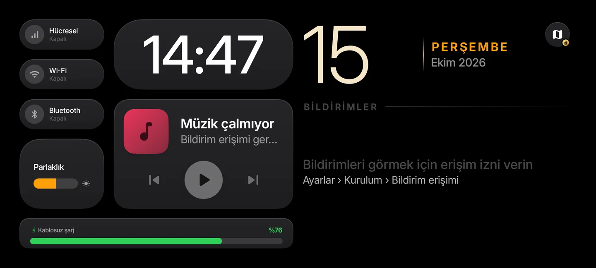
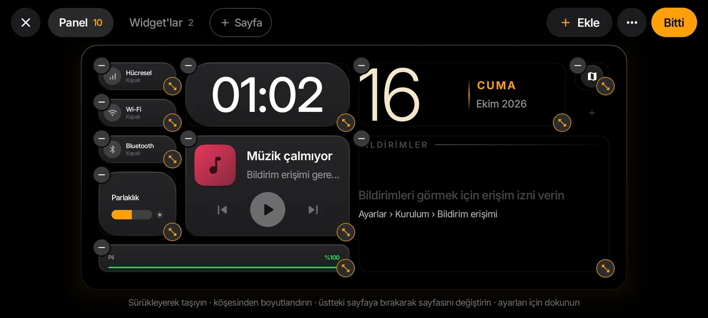
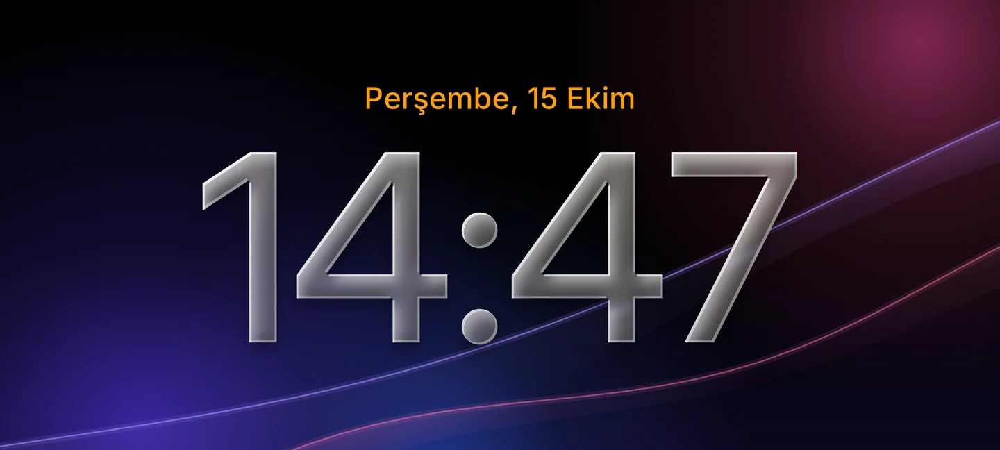
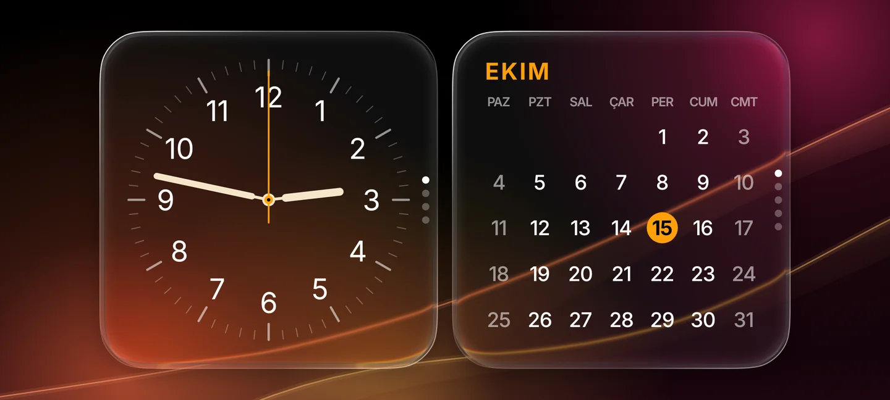
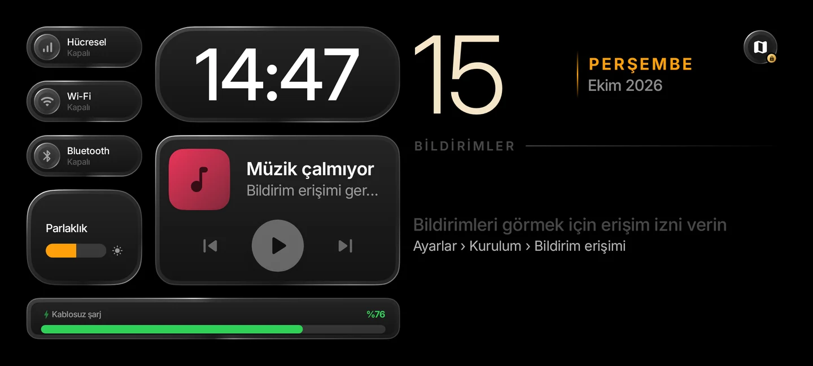
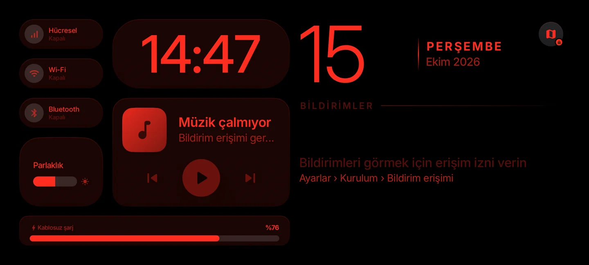
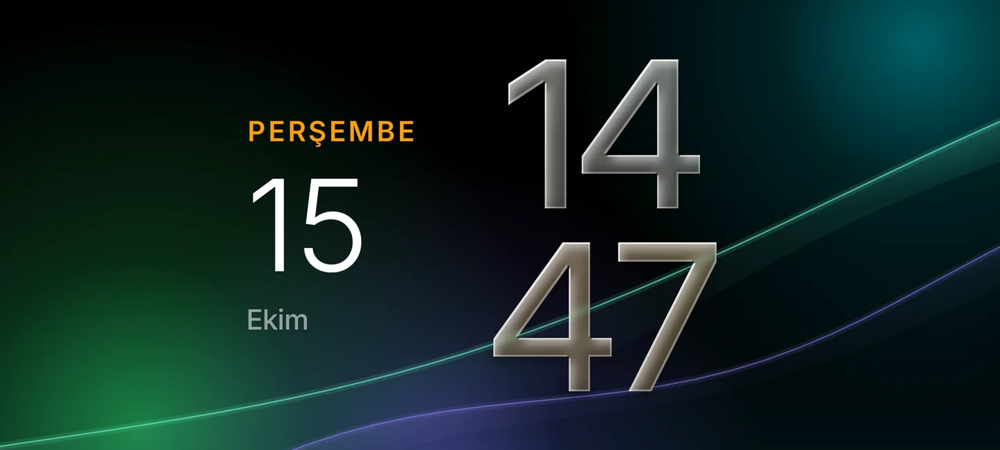

Opens on the charger
It notices the phone going onto a wireless charger (or any charger, if you like) and opens on its own, even over the lock screen. Take the phone off and it closes; a short slip off the pad doesn't count.
Mobile · Android
Put the phone on a wireless charger and it becomes a bedside clock and dashboard: the time, widgets, music, notifications and a navigation map on a dark screen built for AMOLED. Every item can be placed anywhere, and at night the screen turns red and dims itself.
In internal testing on Google Play. Until it's published there's no public download link.

Everything a phone on a nightstand or a desk can show, without waking anyone up.
It notices the phone going onto a wireless charger (or any charger, if you like) and opens on its own, even over the lock screen. Take the phone off and it closes; a short slip off the pad doesn't count.
Wi-Fi, Bluetooth and mobile data buttons, brightness, clock, music, battery, date, notifications, the map button and widget stacks all sit on a 12×6 grid. Drag them anywhere, resize them from a corner, or move them to another page.
The layout is edited on a full-screen preview. Tap an empty cell to add something there, drop an item on a page tab to move it, and undo any removal. Two extra pages can be designed from scratch.
Digital, analog, floating digits, stacked and a solar clock. Digits roll like on a phone's lock screen, and you swipe up and down between styles.
Calendar, world clock, next alarm, countdown, moon phase, daylight, a live charging gauge, a note and more. Stack them and swipe through, or let the stack turn by itself.
Controls for whatever is playing, with the album art. Notifications appear in their own panel and can be swiped away or cleared together; apps you don't want to see can be filtered out.
A dark map, route drawing, a manoeuvre card and spoken directions. Search finds places by name, a filter removes GPS jumps, and you're rerouted as soon as you leave the road. No API key or account.
When the room goes dark, or on a schedule, the whole screen fades to red and the brightness drops to the minimum, so the clock never lights up the room.
Cards, buttons and the clock digits turn into glass that bends and blurs the light behind it, over slow, flowing wallpapers. The wallpapers are mostly true black, and there's a pure black one too.
Fourteen ready-made themes, seven typefaces with adjustable weight, clock and accent colours, card styles, date formats, an Aura glow and a gradient for the digits.
Black backgrounds keep pixels off, the content shifts a few pixels every minute against burn-in, and the screen can dim itself after a while without a touch.
Wi-Fi, Bluetooth and mobile data switch directly when Shizuku is installed; otherwise the system's own quick panel opens. Photos can also be shown as a slideshow with the time.
Rendered from the app's own code with sample data. Click to enlarge.






A Jetpack Compose app that stays out of the way until the phone is charging.
Android doesn't tell apps in the background when charging starts, so a small foreground service listens for it and shows a quiet notification while it does.
When charging starts, the clock screen is launched full screen, even with the screen off and the phone locked. Settings opened from there also show over the lock screen.
The time ticks once a second, but only the parts that show it are redrawn. Idle animations stop, and system queries run off the UI thread.
Lift the phone and the screen closes. A long press opens a small menu for settings or closing by hand.
The wallpaper is recorded into a graphics layer, and each glass card samples the part behind it. An AGSL shader bends the image near the rounded edges like a thick lens, splits red and blue slightly, and brightens the rim. Android 12 gets the blur without the bending; older versions get translucent glass.
float t = clamp(-d / bevel, 0.0, 1.0);
float k = 1.0 - t;
float bend = 1.0 - sqrt(1.0 - k * k);
half4 c = content.eval(coord + n * strength * bend);Location comes from GPS, the network and the fused provider at once. Coarse network fixes are dropped while a good GPS fix is recent, impossible jumps are rejected, and the rest goes through a Kalman filter tuned by speed: steady at a red light, no lag on the motorway.
Leaving the route is detected at about 30 metres, sooner when your heading turns away from it. The new route is requested in your direction of travel, so it doesn't ask for a U-turn.
Results come from Photon, Nominatim and the phone's own address lookup, merged and sorted: places named after what you typed first, nearby ones before distant ones, each with its kind, such as Restaurant or Pharmacy.
Designed for AMOLED: the base is true black, colour lives only in soft corner glows and thin streaks of light that the glass bends at its edges.

Clear glass shows the wallpaper sharply and bends it at the edges; frosted glass is darker and blurrier, so text stays easy to read on any wallpaper. In night mode the wallpaper fades out and the screen goes back to black.
The wallpaper moves about twelve times a second, less than a pixel each time. The glass is redrawn only when the wallpaper or the card moves, not when the clock ticks or the battery bar shimmers.
The clock, the layout, widgets and night mode are free. Premium adds the extras, and most of them can be tried for a day first.
A Premium theme, typeface, clock style, widget or the map can be unlocked for 24 hours by watching a short rewarded ad you start yourself. Each item needs its own ad, and it locks again when the day is over.
Ads never appear on the clock screen by themselves, and never over the lock screen; the phone has to be unlocked before one is shown.
StandBy+ Premium is a monthly subscription billed through Google Play. It renews automatically and can be cancelled at any time under Play Store › Payments & subscriptions; it stays active until the end of the paid period.
| Feature | Free | Premium |
|---|---|---|
| Clock, layout, editor, night mode | ✓ | ✓ |
| Themes, typefaces, clock styles, widgets | Some; others for 24 h with an ad | All |
| Map and navigation | 24 h with an ad | ✓ |
| Liquid Glass | — | ✓ |
| Aura, digit gradient, custom colours | — | ✓ |
| Smart stacks, notification filter | — | ✓ |
| Ads in Settings | A small banner | None |
No account, no analytics, and no server of the developer's own. Notifications and photos never leave the phone.
| Permission | What it's for |
|---|---|
| Notifications | The quiet notification of the service that notices the charger. |
| Show over other apps | Together with full-screen notifications: opening the clock by itself when charging starts, even over the lock screen. |
| Notification access | Optional. Showing notifications and the music that's playing on the Panel. The content is read only to be displayed and stays on the phone. |
| Location | Optional, and only while the map is open. It isn't collected in the background. |
| Photos | Picked with the system photo picker for the slideshow; no storage permission is needed. |
Map tiles come from OpenFreeMap, routes from the OpenStreetMap community's routing server, and searches go to Photon, Nominatim and the phone's address lookup. With ads, Google AdMob may process the advertising ID; in the EEA, the UK and Switzerland a consent form comes first. Payments stay inside Google Play.
Full text: Privacy policy · Gizlilik politikası (Türkçe)
Questions, bug reports and requests: yeepylabs@gmail.com
Doesn't open on the charger? Make sure every item under Settings › Setup is green. On Xiaomi, Oppo, Vivo and Huawei phones, also allow auto-start, opening windows from the background and showing on the lock screen in the app's system settings.